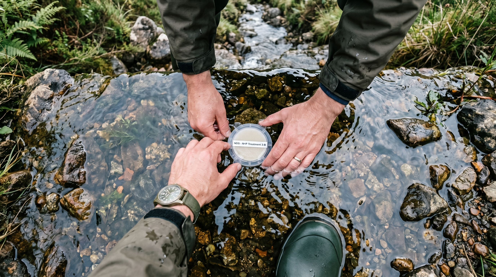
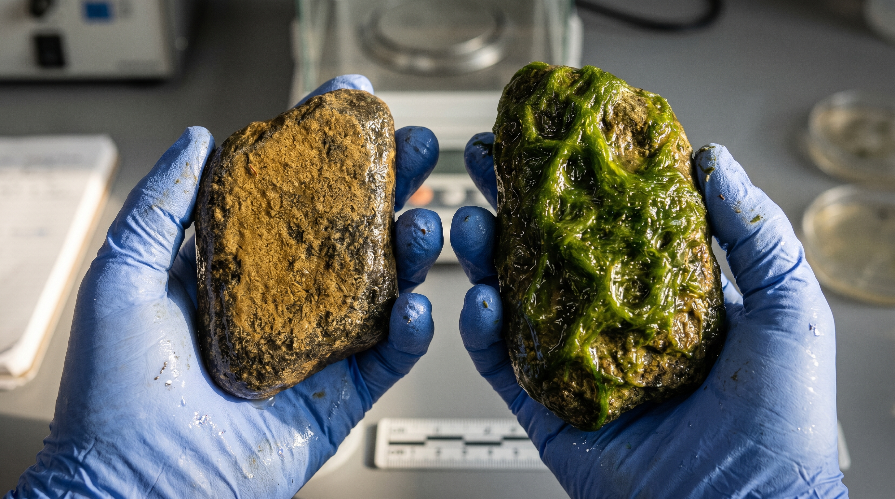

Project Context
§ 01The Challenge / Hypothesis
Wade into Fish Creek behind the Kent State campus on a warm afternoon and the water runs clear over smooth rocks. It looks healthy. David Costello sees something most scientists have spent decades overlooking: a stream that is quietly iron-deficient. For decades, the foundational assumption in stream ecology has been that algae and the organisms at the base of aquatic food webs are limited almost exclusively by nitrogen and phosphorus. Costello's lab suspected the field had been looking at the wrong nutrients.
The Solution / Innovation
Working with 10 co-authors across four institutions and funded by the National Science Foundation, Costello conducted nutrient and metal enrichment experiments across 41 streams spanning 14 degrees of latitude in the eastern United States — including Fish Creek and Breakneck Creek within walking distance of the Kent State campus. The team deployed small substrates that released controlled amounts of iron, zinc, nitrogen, phosphorus, and other metals into each stream, then measured how algae and microbial communities responded.
The findings challenge decades of received wisdom: iron limitation was the most widespread finding, affecting 50% of streams. Zinc limitation appeared in 33% of streams — the first time zinc limitation of stream biofilms has been demonstrated at this spatial scale. The implications extend well beyond the science page. Costello's team developed predictive models showing that iron and zinc limitation can be forecasted from broader environmental variables — potentially giving land managers and regulators a new lever to pull in the ongoing fight against harmful algal blooms in Lake Erie.
Scientific Workflow
§ 02Site Selection and Baseline Survey
Identifying study streams across the transect — from Northeast Ohio's local waterways out to Michigan and the Southeast. Baseline water chemistry and algal community measurements establish the pre-treatment condition.
Substrate Deployment
The experimental apparatus: small substrates (ceramic tiles, nutrient-diffusing substrates) placed in the stream that slowly release controlled doses of iron, zinc, nitrogen, phosphorus and other metals. The substrates are anchored in the stream bed and left for 2-4 weeks.
Biofilm Sampling
After the experiment runs, researchers collect the substrates and scrape the biofilm that has grown on them — the algal and microbial community that responded to the nutrient treatment. The biofilm is the data.
Laboratory Analysis
Collected biofilm samples analyzed for biomass, community composition, and elemental content. Microscopy identifies which organisms — diatoms, cyanobacteria, green algae — responded to which nutrients. Water chemistry analyzed for baseline metal concentrations.
---
Shot Concepts
§ 03Costello mid-stream in Fish Creek or Breakneck Creek — waders on, knee-deep in the water, looking directly at camera. This is the image that places the research in the real world immediately. The stream is the laboratory. The rocks under the water are the data. The clarity of the water around him is the whole paradox of the story: it looks fine. But it isn't.
- Shoot from a low angle at or near water level — position camera on a tripod or monopod nearly touching the water surface
- The stream should fill the lower half of the frame; sky or streamside vegetation in the upper half
- Early morning or overcast light ideal — avoid harsh midday contrast on the water
- Include a graduate student or undergraduate if available — this is a team story
- Golden hour version is also viable: warm backlight on the water reads beautifully
- Horizontal for editorial spread; vertical for profile
Technical Notes
Setup Diagram

AI Visualization Prompt
Hands submerged in the stream, placing or retrieving a nutrient-diffusing substrate from the streambed. The moment of experimental contact: the point where the science enters the water. The substrate visible against the rocks and sediment below. This is the image of the method — the thing that makes the finding possible.
- Shoot from above (researcher leaning over the stream) or from the side at water level
- The water clarity is essential — the substrate needs to be visible beneath the surface
- Polarizing filter on the lens will eliminate surface glare and reveal the streambed
- Waders, field gear, the physical reality of doing this work 41 times across two summers — don't hide any of it
- Include sediment, rocks, and the natural substrate texture around the experimental device
Technical Notes
Setup Diagram

AI Visualization Prompt
Two rocks side by side: one with a healthy, natural biofilm — a thin, brownish- gold layer of diatoms that is barely visible; one covered in dense, slimy green algal overgrowth — the visual signature of too much nitrogen and phosphorus. This single image is the entire argument of the research made visible. The difference between a functioning stream and a struggling one, held in two hands.
- Source the overgrown rock from a nutrient-polluted stream (or use a simulated comparison from experimental substrates)
- Gloved hands hold both rocks — scale and humanity in frame
- Shoot on a neutral natural surface: a flat rock in the field, or a dark tray in the lab
- Side light at a low angle to reveal the biofilm texture on both surfaces
- This is a UPAA-eligible object study on its own merit
Technical Notes
Setup Diagram

AI Visualization Prompt
Extreme close-up of stream biofilm under microscopy — the algal and microbial community that Costello's research measures. Diatoms are geometric, glassy, and beautiful under the microscope. Cyanobacteria form filaments and clusters. This is the base of the aquatic food web, rendered visible for the first time as the subject of the image rather than the supporting data.
- Shoot directly from the microscope monitor or use a camera adapter
- Request a sample with visual diversity — a mix of diatoms (glass-like, geometric, amber-brown) and cyanobacteria (blue-green filaments)
- Under phase contrast or DIC microscopy the diatom geometry is extraordinary
- No human subject needed — the organisms are the subjects
- This image pairs with any of the field images as a scale-shift moment in editorial layout
Technical Notes
Setup Diagram